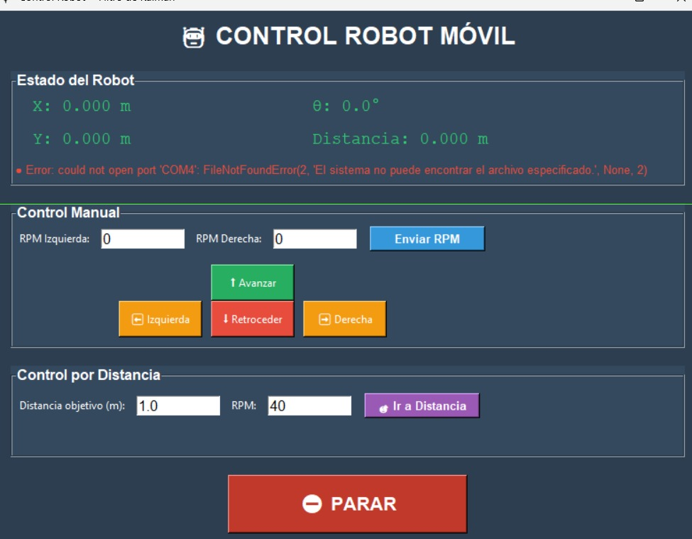

Algoritmos de control, navegación autónoma y arquitectura de software del proyecto CARTMAN
El sistema de control de CARTMAN implementa una arquitectura distribuida de dos procesadores ESP32 operando en comunicación maestro-esclavo a 115200 baud. El ESP32 maestro gestiona sensores y navegación, mientras que el ESP32 esclavo controla los cuatro motores con encoders ópticos de 1440 PPR.
Se implementó control PID con anti-windup (límite integral = 1000) logrando convergencia exponencial con τ ≈ 200 ms. El sistema alcanza cambios de rumbo de ±45° en tiempo de asentamiento de 0.8-1.0 segundos con error en estado estacionario inferior a 0.3°.
Arquitectura de Dos ESP32 en Comunicación Maestro-Esclavo
ESP32 Sensores (Maestro) ↔ UART 115200 ↔ ESP32 Motores (Esclavo)
• Adquisición sensorial a 20 Hz
• Magnetómetro QMC5883L
• IMU MPU6050
• Comunicación USB + UART
• Carga CPU: 22%
• Control PID a 10 Hz
• 4 motores con encoders 1440 PPR
• Drivers L298N (PWM 15 kHz)
• Latencia: < 50 ms
• Carga CPU: 10%
• GUI Tkinter para monitoreo
• Actualización 2 Hz
• Ajuste en vivo de Kp, Ki, Kd
• Telemetría en tiempo real
• Botón parada emergencia
Formato de Telemetría (Sensores → Motores):
"0.0,0.0,0.0,0,0,0,heading,headingFiltered,velM1,velM2,velM3,velM4\n"
• Baudrate: 115200 bps
• Latencia promedio: 45 ms (USB), 35 ms (UART)
• Pérdida de datos: 0% (2+ horas operación)
• Timeout seguridad: 500 ms → STOP automático
Formato de Comandos (Motores ← Sensores):
"RPM:XX.XX,XX.XX\n" // RPM izquierda, RPM derecha
"STOP\n" // Parada de emergencia
Se implementó controlador PID para cada motor con encoders de 1440 PPR, permitiendo control preciso de velocidad. Los parámetros fueron sintonizados mediante protocolo sistemático Ziegler-Nichols con refinamiento experimental.
u(t) = Kp × e(t) + Ki × ∫e(t)dt + Kd × de(t)/dt
Donde: e(t) = error entre setpoint y medición actual
// Implementación real del PID con anti-windup
error = setpoint - medicion;
integral += error * dt;
// ANTI-WINDUP (Limitación Integral = 1000)
if (integral > 1000) integral = 1000;
if (integral < -1000) integral = -1000;
derivativo = (error - error_anterior) / dt;
salida = Kp*error + Ki*integral + Kd*derivativo;
error_anterior = error;
Fase 1 - Proporcional (Ki=0, Kd=0):
Fase 2 - Integral (Kp=1.5, Kd=0):
Fase 3 - Derivativo (Kp=1.5, Ki=0.5):
Cambios de rumbo ±45°: 0.8-1.0 segundos
Constante de tiempo τ ≈ 200 ms
Con PID completo: < 0.3°
Sin anti-windup: oscilaciones ±8° (26× peor)
Error en 150 metros: ±1.4 cm
Error relativo: 0.009%
Empuje lateral 30N: compensado en < 0.4 s
Overshoot: 2°
| Tiempo | Rumbo Actual | Error | Corrección PWM |
|---|---|---|---|
| 0.0 s | 0° | -45° | 0 |
| 0.1 s | -8° | -37° | +65 |
| 0.2 s | -18° | -27° | +55 |
| 0.3 s | -30° | -15° | +35 |
| 0.4 s | -38° | -7° | +18 |
| 0.5 s | -42° | -3° | +8 |
| 0.6 s | -44° | -1° | +2 |
✓ Sistema alcanza setpoint en 0.6 segundos sin overshoot
El modelo cinemático describe el movimiento del robot sin considerar fuerzas. Cada rueda tiene una velocidad lineal que depende de su velocidad angular:
v_R = R · φ̇_R (rueda derecha)
v_L = R · φ̇_L (rueda izquierda)
Donde:
• R = radio de la rueda (50 mm)
• φ̇ = velocidad angular de la rueda
El robot se mueve con velocidad promedio de ambas ruedas. Cuando ambas van a la misma velocidad, avanza en línea recta:
v = (v_R + v_L) / 2 = R(φ̇_R + φ̇_L) / 2
ω = (v_R - v_L) / (2L) = R(φ̇_R - φ̇_L) / (2L)
Donde L = 175 mm (distancia del centro a cada rueda)
ẋ_r = v (hacia adelante)
ẏ_r = 0 (no hay movimiento lateral)
θ̇ = ω (velocidad de rotación)
ẋ_a = v · cos(θ)
ẏ_a = v · sin(θ)
θ̇ = ω
El modelo dinámico considera las fuerzas actuantes. Para el vehículo diferencial de 4 ruedas (4WDD) con masa m = 14 kg e inercia I:
m·aₓ = 2Fₓ₁ + 2Fₓ₂ - Rₓ
m·aᵧ = -Fᵧ
I·θ̈ = 2t(Fₓ₁ - Fₓ₂) - Mᵣ
Donde:
• Fₓᵢ = fuerzas de tracción
• Rₓ = resistencia longitudinal = fᵣ·m·g·sgn(ẋ)
• Fᵧ = fuerza lateral
• t = 175 mm (semi-ancho del vehículo)
En notación matricial con coordenadas generalizadas q = (X, Y, θ):
M·q̈ + C(q, q̇) = E(q)·τ
τᵢ = 2r·Fₓᵢ (i = 1,2)
Donde r = 50 mm (radio de rueda) y τ₁, τ₂ son los torques de motores
izquierdo y derecho
El sistema de navegación autónoma integra múltiples algoritmos para planificación de trayectorias, detección de obstáculos y comportamientos reactivos.
Algoritmo A* o RRT para encontrar rutas óptimas entre puntos en un mapa conocido.
Fusión de sensores ultrasónicos y cámara para detección en tiempo real de obstáculos.
Respuestas inmediatas a eventos del entorno usando máquina de estados finitos.
Control de seguimiento para ejecutar las trayectorias planificadas con precisión.
CARTMAN integra múltiples sensores para navegación autónoma precisa y detección de obstáculos en tiempo real.
• Precisión: ±5° (con calibración hard iron)
• Offsets: X=1181, Y=-99
• Filtro paso bajo α=0.2
• Frecuencia: 20 Hz
• Acelerómetro ±2g, precisión ±0.15g
• Giroscopio ±250°/s, drift ~2°/s²
• Filtro Kalman complementario
• Error orientación: < 1°
• Cantidad: 4 (frontal, trasero, laterales)
• Rango: 20-150 cm
• Exactitud: ±3 cm
• Cobertura: 360° perimetral
• Resolución: 1440 PPR
• Precisión: ±1 pulso/revolución (0.28%)
• Frecuencia respuesta: 1000 Hz
• Latencia: < 1 ms
Se ejecutó protocolo de calibración hard iron mediante rotación completa (360°) del vehículo. Los datos obtenidos fueron:
| Eje | Valor Mínimo | Valor Máximo | Offset (Centroide) |
|---|---|---|---|
| Eje X | 1055 | 2307 | 1181 |
| Eje Y | -198 | 0 | -99 |
✓ Error reducido de ±45° (sin calibración) a ±5° (con calibración)
Comparación Magnetómetro vs Brújula de Referencia (Suunto MC-2):
| Dirección | Magnetómetro | Referencia | Error |
|---|---|---|---|
| Norte (0°) | 2° | 0° | +2° |
| NE (45°) | 48° | 45° | +3° |
| Este (90°) | 93° | 90° | +3° |
| SE (135°) | 138° | 135° | +3° |
| Sur (180°) | 183° | 180° | +3° |
| SO (225°) | 227° | 225° | +2° |
| Oeste (270°) | 268° | 270° | -2° |
| NO (315°) | 313° | 315° | -2° |
✓ Error máximo: ±3° (aceptable para navegación en interiores)
Se desarrolló una interfaz gráfica intuitiva que permite controlar el robot de forma manual, configurar parámetros, visualizar telemetría en tiempo real y monitorear el estado del sistema.

Controles para movimiento manual, selección de modo autónomo/manual, botón de emergencia.
Gráficas de velocidad, corriente, voltaje de batería y estado de sensores.
Visualización en vivo de la cámara con overlays de detección de objetos.
Ajuste de parámetros PID, velocidades máximas, umbrales de sensores.
Se implementó un protocolo de comunicación bidireccional eficiente que permite enviar comandos desde la interfaz de usuario y recibir datos de telemetría del robot.
// Estructura de paquete de datos
struct TelemetryPacket {
float velocidad_izq;
float velocidad_der;
float voltaje_bateria;
float corriente;
uint16_t distancia_sensores[4];
float posicion_x, posicion_y, orientacion;
uint8_t estado_sistema;
};